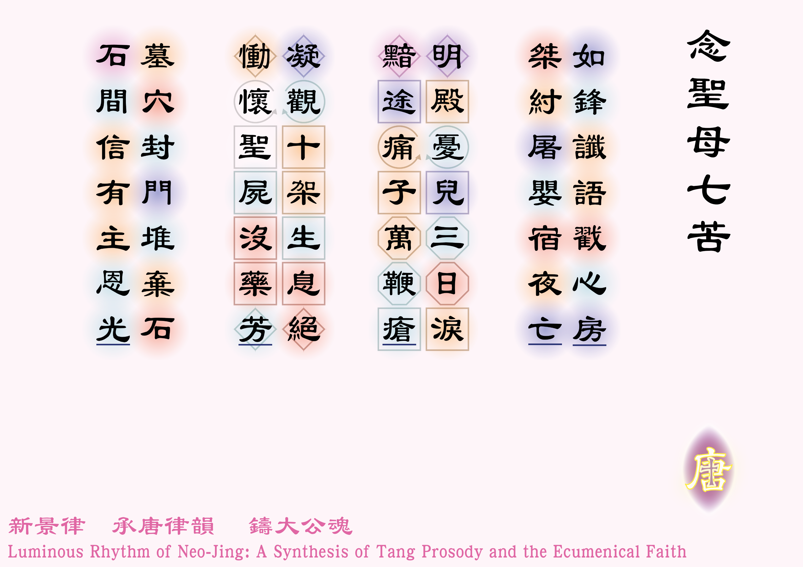

![[如果未顯示圖片，請確認 圖例_2-01.jpg 已放入同資料夾]](圖例_2-01.png)

如鋒讖語戳心房 [1]第一苦：西默盎的預言，見〈路加福音：2:34-35〉；
讖語：預言。，桀紂屠嬰宿夜亡 [2]第二苦：聖家逃難往埃及，見〈瑪竇福音：2:13-14〉；
桀紂：中國上古時代的暴君，借指黑落德王；
宿：粵音秀，星。。
明殿憂兒三日淚 [3]第三苦：與耶穌在耶路撒冷失散三日，見〈路加福音：2: 43-45, 48-50〉；
明殿：聖殿。，黯途痛子萬鞭瘡 [4]第四苦：聖母在苦路中遇到了耶穌，見〈路加福音：23:27〉；黯途：苦路。。
凝觀十架生息絕 [5]第五苦：聖母站在耶穌十字架旁，見〈若望福音：19:25-30〉。，慟懷聖屍沒藥芳 [6]第六苦：聖母懷抱耶穌屍體，見〈若望福音：19:40〉。
在筆者覆檢此句時，發現此句的平仄為「仄平仄平仄仄平」，但格律要求應為「仄仄平平仄仄平」，犯了格律的技術錯誤，惟經反覆思量後，「慟懷聖屍」仍是最神聖和優美的表達，故決定捨棄格律的完美，維持原句，也以此紀念第一首「新景律」作品的青澀。，
墓穴封門堆棄石 [7]第七苦：耶穌聖屍被埋葬，見〈瑪爾谷福音：15:46〉；
棄石：見〈瑪竇福音：21:42〉。，石間信有主恩光！。
體裁：七言古律（平起首句入韻）
韻部：平水韻．七陽
創作日期：二零二五年十二月十六日